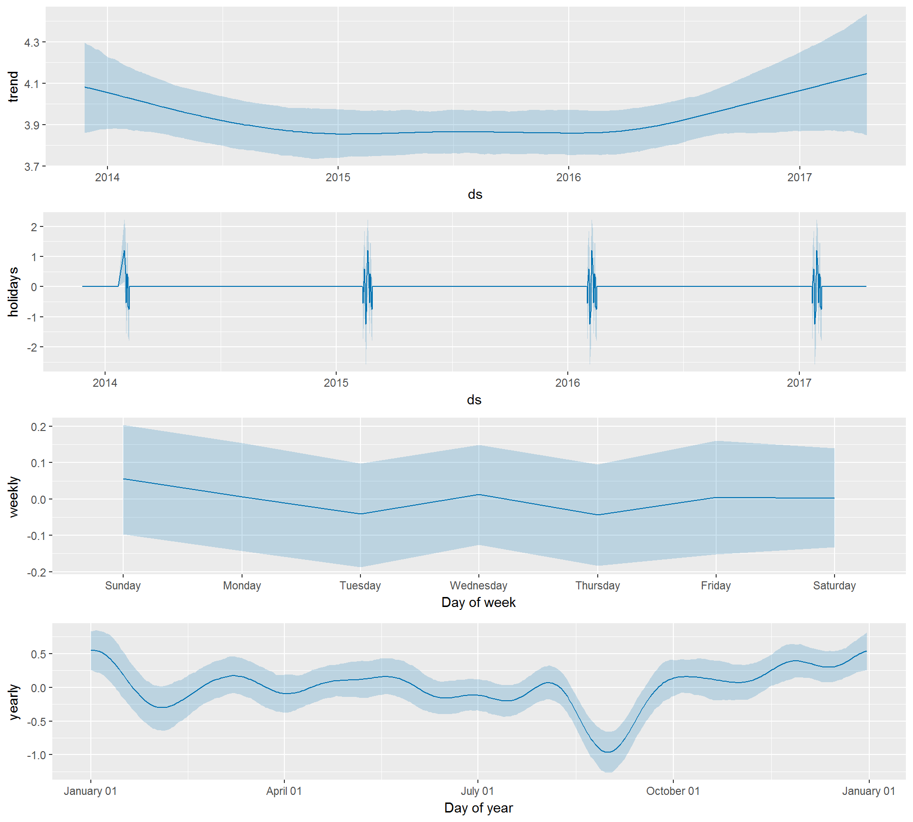

Forecasting Air Quality in Beijing with Prophet
January 10, 2016
Introduction
It’s been a while since I updated my last blog post about exploratory data anlysis for air quality in Chinese cities. I finally got time to finish this blog post series. In this blog post, I will focus on the following modeling questions.
- Can we forecast the air quality in Beijing?
- How to measure the impact of Spring festival for the air quality in Beijing?
With time series analysis and forecasting, we can study and quantify the causal impacts of the seasonal and holiday effects on air quality. Besides, one important fact about Spring Festival is that it’s the biggest time for migration, reunion and celebration, as you can know more from this interesting BBC documentary Chinese New Year: The Biggest Celebration on Earth.
Library Setup
# API scraping
library(ropenaq) # sourced from OpenAQ, see https://github.com/ropensci/ropenaq
# Data Munging
library(tidyverse)
library(lubridate)
# Data Visualization
library(ggplot2)
# Time Series Analysis
library(xts)
library(seasonal)
library(prophet)Data
First, we collect the data using the OpenAQ API, which is one of the ROpenSci projects. The date ranges from 2013-11-26 to 2017-03-27.
how_many <- attr(aq_measurements(city = "Beijing"), "meta")
n <- how_many$found
results_ls <- list()
# Limit is 1000 observations at once, so we bring them all in 1000 at a time:
for(i in 1:ceiling(n / 1000)){
results_ls[[i]] <- aq_measurements(country = "CN", city = "Beijing", parameter = "pm25",
limit = 1000, page = i)
cat(i)
}## 12345678910111213141516171819202122232425# convert into a data frame:
results_df <- do.call("rbind", results_ls) %>% arrange(dateLocal)Since the air quality is measured at different times in Beijing each day, to forecast the overall trend, we want to aggregate the data on a daily basis for the time series.
bj_df <- results_df %>% filter(value > 0) %>% mutate(Day = as.Date(dateLocal)) %>%
group_by(Day) %>% summarise(avg_AQ = mean(value, tr = 0.1, na.rm = TRUE)) %>% ungroup()
tail(bj_df)## # A tibble: 6 × 2
## Day avg_AQ
## <date> <dbl>
## 1 2017-03-23 126.33333
## 2 2017-03-24 67.05000
## 3 2017-03-25 35.60000
## 4 2017-03-26 11.70000
## 5 2017-03-27 13.31579
## 6 2017-03-28 49.83333From the crude time series, we can spot that some high peaks are around the end of years. Note that there exists some gaps in the time series too, which causes a challenge to directly apply generative time series model, like ARIMA model.
bj_df %>%
ggplot(aes(x = Day, y = avg_AQ)) + geom_line() +
ggtitle("Daily PM 2.5 Trend in Beijing")Modeling
I decided to play with a recent forecasting tool Prophet by Facebook, which is originated from their research “Forecasting at Scale”. From their introduction, Prophet is robust to missing data, shifts in the trend, and large outliers. It would be interesting to test the claim. The underlying engine for the tool is bayesian probabilistic modeling(Stan) with the generalized additive model(GAM) framework. Bayesian probabilistic modeling in Stan is amazing in that you can fit pretty much any model you can describe in an equation. The fitting and forecasting process is based on the following formula:
\[ y(t) = g(t) + s(t) + h(t) +\epsilon(t) \] where \(y(t)\) is the time series values, \(g(t)\) represents our growth function which models non-periodic changes in the value of the time series, \(s(t)\) represents periodic changes due to weekly or yearly seasonality, and h(t) represents the effects of holidays which occur on potentially irregular schedules over one more days. The error term \(\epsilon(t)\) represents any idiosyncratic changes which are not accommodated by our model and follows normal distribution. This approach frames the forecasting problem as a curve-fitting exercise with time as the only regressor through linear or nonlinear functions. This GAM formulation is inherently different from time series models that explicitly account for the temporal dependence structure in the data.
As detailed in the paper, while we sacrifice some important inferential advantages of using a generative model such as an ARIMA, the probabilistic modeling framework has some practical advantages:
- The formulation is flexible: we can easily accommodate seasonality with multiple periods and different assumptions about trends.
- Unlike with ARIMA models, the time series measurements need not have a regular period and we do not need to interpolate missing values to fit.
- Fitting is very fast, allowing the analyst to interactively explore many model specifications, for example in a Shiny application.
- The forecasting model has easily interpretable parameters that can be changed heuristically by the analyst to impose assumptions on the forecast.
Prophet requires one column named ds with dates or datetimes, and one column named y with numeric values. We would need to do a log transformation on the y value for the statistical purposes of stablizing the variance and normality assumption for modeling.
bj_df <- bj_df %>% rename(ds = Day, y = avg_AQ) %>% mutate( y = log(y))We want to denote the times for the historical spring festival periods in the specialized column named “holiday” as the input. First, I found the individual historical spring festival dates from 2014 to 2017. Furthermore, we would prefer to study the effect of spring festival as a period since the most massive traffic and celebration activities would happened during the period. From the official document, we are able to include columns lower_window and upper_window which extend the holiday out to “[lower_window, upper_window]” days around the date.
sf_dates <- as.Date(c('2014-01-31', '2015-02-19', '2016-02-08', '2017-01-28'))
holidays_df <- bj_df %>% filter(ds %in% sf_dates) %>% mutate(holiday = 'SpringFestival') %>%
mutate(lower_window = -7,upper_window= 7)%>%
select(ds, holiday, lower_window, upper_window)Next, we split the time series for fitting and forecasting to evaluate the model performance.
fit_df <- bj_df %>% filter(ds <= '2016-12-31')
forecast_df <- bj_df %>% filter(ds > '2016-12-31')It’s quite straightforward to fit the time series after we prepared the data. But there are couple nuances. To estimate the uncertainty in trend, we can specify the interval.width. Also, it would be nice to get the estimates for uncertainty in seasonality by configuring the mcmc.samples so that it would give the estimated weekly and yearly seasonal effects. The make_future_dataframe function takes the model object and a number of periods to forecast and produces a suitable dataframe. By default it will also include the historical dates so we can evaluate in-sample fit.
num_to_forecast <- n_distinct(forecast_df$ds) # number of dates for forecasting
m <- prophet(fit_df, interval.width = 0.95, holidays = holidays_df, mcmc.samples = 500)##
## SAMPLING FOR MODEL 'prophet_linear_growth' NOW (CHAIN 1).
##
## Chain 1, Iteration: 1 / 500 [ 0%] (Warmup)
## Chain 1, Iteration: 50 / 500 [ 10%] (Warmup)
## Chain 1, Iteration: 100 / 500 [ 20%] (Warmup)
## Chain 1, Iteration: 150 / 500 [ 30%] (Warmup)
## Chain 1, Iteration: 200 / 500 [ 40%] (Warmup)
## Chain 1, Iteration: 250 / 500 [ 50%] (Warmup)
## Chain 1, Iteration: 251 / 500 [ 50%] (Sampling)
## Chain 1, Iteration: 300 / 500 [ 60%] (Sampling)
## Chain 1, Iteration: 350 / 500 [ 70%] (Sampling)
## Chain 1, Iteration: 400 / 500 [ 80%] (Sampling)
## Chain 1, Iteration: 450 / 500 [ 90%] (Sampling)
## Chain 1, Iteration: 500 / 500 [100%] (Sampling)
## Elapsed Time: 12.1 seconds (Warm-up)
## 9.102 seconds (Sampling)
## 21.202 seconds (Total)
##
## [1] "The following numerical problems occured the indicated number of times after warmup on chain 1"
## count
## Exception thrown at line 46: normal_log: Scale parameter is 0, but must be > 0! 3
## [1] "When a numerical problem occurs, the Hamiltonian proposal gets rejected."
## [1] "See http://mc-stan.org/misc/warnings.html#exception-hamiltonian-proposal-rejected"
## [1] "If the number in the 'count' column is small, do not ask about this message on stan-users."
##
## SAMPLING FOR MODEL 'prophet_linear_growth' NOW (CHAIN 2).
##
## Chain 2, Iteration: 1 / 500 [ 0%] (Warmup)
## Chain 2, Iteration: 50 / 500 [ 10%] (Warmup)
## Chain 2, Iteration: 100 / 500 [ 20%] (Warmup)
## Chain 2, Iteration: 150 / 500 [ 30%] (Warmup)
## Chain 2, Iteration: 200 / 500 [ 40%] (Warmup)
## Chain 2, Iteration: 250 / 500 [ 50%] (Warmup)
## Chain 2, Iteration: 251 / 500 [ 50%] (Sampling)
## Chain 2, Iteration: 300 / 500 [ 60%] (Sampling)
## Chain 2, Iteration: 350 / 500 [ 70%] (Sampling)
## Chain 2, Iteration: 400 / 500 [ 80%] (Sampling)
## Chain 2, Iteration: 450 / 500 [ 90%] (Sampling)
## Chain 2, Iteration: 500 / 500 [100%] (Sampling)
## Elapsed Time: 11.548 seconds (Warm-up)
## 9.552 seconds (Sampling)
## 21.1 seconds (Total)
##
## [1] "The following numerical problems occured the indicated number of times after warmup on chain 2"
## count
## Exception thrown at line 46: normal_log: Scale parameter is 0, but must be > 0! 2
## [1] "When a numerical problem occurs, the Hamiltonian proposal gets rejected."
## [1] "See http://mc-stan.org/misc/warnings.html#exception-hamiltonian-proposal-rejected"
## [1] "If the number in the 'count' column is small, do not ask about this message on stan-users."
##
## SAMPLING FOR MODEL 'prophet_linear_growth' NOW (CHAIN 3).
##
## Chain 3, Iteration: 1 / 500 [ 0%] (Warmup)
## Chain 3, Iteration: 50 / 500 [ 10%] (Warmup)
## Chain 3, Iteration: 100 / 500 [ 20%] (Warmup)
## Chain 3, Iteration: 150 / 500 [ 30%] (Warmup)
## Chain 3, Iteration: 200 / 500 [ 40%] (Warmup)
## Chain 3, Iteration: 250 / 500 [ 50%] (Warmup)
## Chain 3, Iteration: 251 / 500 [ 50%] (Sampling)
## Chain 3, Iteration: 300 / 500 [ 60%] (Sampling)
## Chain 3, Iteration: 350 / 500 [ 70%] (Sampling)
## Chain 3, Iteration: 400 / 500 [ 80%] (Sampling)
## Chain 3, Iteration: 450 / 500 [ 90%] (Sampling)
## Chain 3, Iteration: 500 / 500 [100%] (Sampling)
## Elapsed Time: 12.6 seconds (Warm-up)
## 9.786 seconds (Sampling)
## 22.386 seconds (Total)
##
## [1] "The following numerical problems occured the indicated number of times after warmup on chain 3"
## count
## Exception thrown at line 46: normal_log: Scale parameter is 0, but must be > 0! 2
## [1] "When a numerical problem occurs, the Hamiltonian proposal gets rejected."
## [1] "See http://mc-stan.org/misc/warnings.html#exception-hamiltonian-proposal-rejected"
## [1] "If the number in the 'count' column is small, do not ask about this message on stan-users."
##
## SAMPLING FOR MODEL 'prophet_linear_growth' NOW (CHAIN 4).
##
## Chain 4, Iteration: 1 / 500 [ 0%] (Warmup)
## Chain 4, Iteration: 50 / 500 [ 10%] (Warmup)
## Chain 4, Iteration: 100 / 500 [ 20%] (Warmup)
## Chain 4, Iteration: 150 / 500 [ 30%] (Warmup)
## Chain 4, Iteration: 200 / 500 [ 40%] (Warmup)
## Chain 4, Iteration: 250 / 500 [ 50%] (Warmup)
## Chain 4, Iteration: 251 / 500 [ 50%] (Sampling)
## Chain 4, Iteration: 300 / 500 [ 60%] (Sampling)
## Chain 4, Iteration: 350 / 500 [ 70%] (Sampling)
## Chain 4, Iteration: 400 / 500 [ 80%] (Sampling)
## Chain 4, Iteration: 450 / 500 [ 90%] (Sampling)
## Chain 4, Iteration: 500 / 500 [100%] (Sampling)
## Elapsed Time: 11.096 seconds (Warm-up)
## 9.784 seconds (Sampling)
## 20.88 seconds (Total)
##
## [1] "The following numerical problems occured the indicated number of times after warmup on chain 4"
## count
## Exception thrown at line 46: normal_log: Scale parameter is 0, but must be > 0! 3
## [1] "When a numerical problem occurs, the Hamiltonian proposal gets rejected."
## [1] "See http://mc-stan.org/misc/warnings.html#exception-hamiltonian-proposal-rejected"
## [1] "If the number in the 'count' column is small, do not ask about this message on stan-users."future <- make_future_dataframe(m, periods = num_to_forecast+1)
tail(future)## ds
## 1040 2017-03-23
## 1041 2017-03-24
## 1042 2017-03-25
## 1043 2017-03-26
## 1044 2017-03-27
## 1045 2017-03-28As with most modeling procedures in R, we can use the generic predict function to get our forecast. The forecast object is a dataframe with a column yhat containing the forecast. It has additional columns for uncertainty intervals and seasonal components.
forecast <- predict(m, future)Finally, we can evaluate our model via the convinient build-in visualization functions. The following plot shows the forecasts with the actual data points. The most obvious fuctuations are for the holiday periods that we were trying to fit. It seems overall the forecasts capture the trend reasonably.
plot(m, forecast)The following is the component effects for the time series plots. Considering the uncetainty intervals, we can see that overall there is a decreasing trend from 2014 to 2016 but the air quality is getting serious again after 2016. Since the intervals for the holidays effects are quite narrow and have high impacts(large absolute values), it gives us more confidence to say the holiday effect is significant for the time series fitting. However, the day of week effect is not necessarily significant. And the yearly seasonal effect is also apparent that the winter season November to Janually tends to have positive impact on high popultion levels while the September is usually the month with the best air quality.
prophet_plot_components(m, forecast)
Let’s delve deeper to investigate the holiday effect. It shows that indeed the first day in a spring festival usually have highest impacts on increasing air pollution levels.
forecast %>%
select(ds, SpringFestival) %>% filter(SpringFestival > 0) %>%
arrange(desc(SpringFestival)) %>%
head(10)## ds SpringFestival
## 1 2014-01-31 1.1962072
## 2 2015-02-19 1.1962072
## 3 2016-02-08 1.1962072
## 4 2017-01-28 1.1962072
## 5 2014-02-01 0.6943397
## 6 2016-02-09 0.6943397
## 7 2017-01-29 0.6943397
## 8 2015-02-14 0.6187398
## 9 2016-02-03 0.6187398
## 10 2017-01-23 0.6187398We can calculate the MAE(mean absolute error) and MAPE (mean absolute percentage error) as a measure for forecast accuracy. The metrics looks promising while there’s still room for improvement. However, I might be also supposed to add a baseline ARIMA model for comparison. I will complete the part of model comparision later.
fore_values <- forecast[forecast$ds > '2016-12-31',]$yhat
true_values <- forecast_df$y
cat("The MAE is ", mean(abs(true_values - fore_values)), '\n')## The MAE is 1.0346cat("The MAPE is ", mean(abs((true_values - fore_values)/true_values)), '\n')## The MAPE is 0.3168523To improve our model, We could also try to use the nonlinear growth specification(growth = ‘logistic’). What’s more, based on the form of logistic growth curve: \[
g(t) = \frac{C}{1+e^{-k(t-b)}}
\] the \(C\) means the capacity of the growth, which can be time dependent. In prophet, we can manually specify “capacities” or the upper limit of the growth curve, allowing us to inject our own prior information about how the forecast will grow (or decline). Empiricaly saying, let’s simply use the historically 90 percentiles of monthly air quality index as the time-dependent “capacities”.
cap_by_mon <- bj_df %>% mutate(mon = month(ds)) %>% group_by(mon) %>% summarise(cap = quantile(y, 0.90))
nbj_df <- bj_df %>% mutate(mon = month(ds)) %>% left_join(cap_by_mon, by = "mon") %>% select(-mon)
fit_df <- nbj_df %>% filter(ds <= '2016-12-31') # split again
forecast_df <- nbj_df %>% filter(ds > '2016-12-31')m2 <- prophet(fit_df, interval.width = 0.95, holidays = holidays_df, mcmc.samples = 500, growth = "logistic", seasonality.prior.scale = 5)##
## SAMPLING FOR MODEL 'prophet_logistic_growth' NOW (CHAIN 1).
##
## Chain 1, Iteration: 1 / 500 [ 0%] (Warmup)
## Chain 1, Iteration: 50 / 500 [ 10%] (Warmup)
## Chain 1, Iteration: 100 / 500 [ 20%] (Warmup)
## Chain 1, Iteration: 150 / 500 [ 30%] (Warmup)
## Chain 1, Iteration: 200 / 500 [ 40%] (Warmup)
## Chain 1, Iteration: 250 / 500 [ 50%] (Warmup)
## Chain 1, Iteration: 251 / 500 [ 50%] (Sampling)
## Chain 1, Iteration: 300 / 500 [ 60%] (Sampling)
## Chain 1, Iteration: 350 / 500 [ 70%] (Sampling)
## Chain 1, Iteration: 400 / 500 [ 80%] (Sampling)
## Chain 1, Iteration: 450 / 500 [ 90%] (Sampling)
## Chain 1, Iteration: 500 / 500 [100%] (Sampling)
## Elapsed Time: 11.81 seconds (Warm-up)
## 11.422 seconds (Sampling)
## 23.232 seconds (Total)
##
##
## SAMPLING FOR MODEL 'prophet_logistic_growth' NOW (CHAIN 2).
##
## Chain 2, Iteration: 1 / 500 [ 0%] (Warmup)
## Chain 2, Iteration: 50 / 500 [ 10%] (Warmup)
## Chain 2, Iteration: 100 / 500 [ 20%] (Warmup)
## Chain 2, Iteration: 150 / 500 [ 30%] (Warmup)
## Chain 2, Iteration: 200 / 500 [ 40%] (Warmup)
## Chain 2, Iteration: 250 / 500 [ 50%] (Warmup)
## Chain 2, Iteration: 251 / 500 [ 50%] (Sampling)
## Chain 2, Iteration: 300 / 500 [ 60%] (Sampling)
## Chain 2, Iteration: 350 / 500 [ 70%] (Sampling)
## Chain 2, Iteration: 400 / 500 [ 80%] (Sampling)
## Chain 2, Iteration: 450 / 500 [ 90%] (Sampling)
## Chain 2, Iteration: 500 / 500 [100%] (Sampling)
## Elapsed Time: 12.535 seconds (Warm-up)
## 6.148 seconds (Sampling)
## 18.683 seconds (Total)
##
## [1] "The following numerical problems occured the indicated number of times after warmup on chain 2"
## count
## Exception thrown at line 69: normal_log: Scale parameter is 0, but must be > 0! 3
## [1] "When a numerical problem occurs, the Hamiltonian proposal gets rejected."
## [1] "See http://mc-stan.org/misc/warnings.html#exception-hamiltonian-proposal-rejected"
## [1] "If the number in the 'count' column is small, do not ask about this message on stan-users."
##
## SAMPLING FOR MODEL 'prophet_logistic_growth' NOW (CHAIN 3).
##
## Chain 3, Iteration: 1 / 500 [ 0%] (Warmup)
## Chain 3, Iteration: 50 / 500 [ 10%] (Warmup)
## Chain 3, Iteration: 100 / 500 [ 20%] (Warmup)
## Chain 3, Iteration: 150 / 500 [ 30%] (Warmup)
## Chain 3, Iteration: 200 / 500 [ 40%] (Warmup)
## Chain 3, Iteration: 250 / 500 [ 50%] (Warmup)
## Chain 3, Iteration: 251 / 500 [ 50%] (Sampling)
## Chain 3, Iteration: 300 / 500 [ 60%] (Sampling)
## Chain 3, Iteration: 350 / 500 [ 70%] (Sampling)
## Chain 3, Iteration: 400 / 500 [ 80%] (Sampling)
## Chain 3, Iteration: 450 / 500 [ 90%] (Sampling)
## Chain 3, Iteration: 500 / 500 [100%] (Sampling)
## Elapsed Time: 12.311 seconds (Warm-up)
## 6.247 seconds (Sampling)
## 18.558 seconds (Total)
##
## [1] "The following numerical problems occured the indicated number of times after warmup on chain 3"
## count
## Exception thrown at line 69: normal_log: Scale parameter is 0, but must be > 0! 3
## [1] "When a numerical problem occurs, the Hamiltonian proposal gets rejected."
## [1] "See http://mc-stan.org/misc/warnings.html#exception-hamiltonian-proposal-rejected"
## [1] "If the number in the 'count' column is small, do not ask about this message on stan-users."
##
## SAMPLING FOR MODEL 'prophet_logistic_growth' NOW (CHAIN 4).
##
## Chain 4, Iteration: 1 / 500 [ 0%] (Warmup)
## Chain 4, Iteration: 50 / 500 [ 10%] (Warmup)
## Chain 4, Iteration: 100 / 500 [ 20%] (Warmup)
## Chain 4, Iteration: 150 / 500 [ 30%] (Warmup)
## Chain 4, Iteration: 200 / 500 [ 40%] (Warmup)
## Chain 4, Iteration: 250 / 500 [ 50%] (Warmup)
## Chain 4, Iteration: 251 / 500 [ 50%] (Sampling)
## Chain 4, Iteration: 300 / 500 [ 60%] (Sampling)
## Chain 4, Iteration: 350 / 500 [ 70%] (Sampling)
## Chain 4, Iteration: 400 / 500 [ 80%] (Sampling)
## Chain 4, Iteration: 450 / 500 [ 90%] (Sampling)
## Chain 4, Iteration: 500 / 500 [100%] (Sampling)
## Elapsed Time: 11.647 seconds (Warm-up)
## 7.311 seconds (Sampling)
## 18.958 seconds (Total)
##
## [1] "The following numerical problems occured the indicated number of times after warmup on chain 4"
## count
## Exception thrown at line 69: normal_log: Scale parameter is 0, but must be > 0! 3
## [1] "When a numerical problem occurs, the Hamiltonian proposal gets rejected."
## [1] "See http://mc-stan.org/misc/warnings.html#exception-hamiltonian-proposal-rejected"
## [1] "If the number in the 'count' column is small, do not ask about this message on stan-users."future2 <- make_future_dataframe(m2, periods = num_to_forecast+1)
future2 <- future2 %>% mutate(mon = month(ds)) %>% left_join(cap_by_mon, by = "mon") %>% select(-mon)
forecast2 <- predict(m2, future2)plot(m2, forecast2)prophet_plot_components(m2, forecast2)
fore_values <- forecast2[forecast2$ds > '2016-12-31',]$yhat
true_values <- forecast_df$y
cat("The MAE is ", mean(abs(true_values - fore_values)), '\n')## The MAE is 1.045254cat("The MAPE is ", mean(abs((true_values - fore_values)/true_values)), '\n')## The MAPE is 0.3234382It seems the logistic growth doesn’t help improve the forecasts.
Closing Remarks
From our analysis, we show that winter season has the highest impact on increasing the air pollution level and the Spring Festival is a significant holiday effect. Our forecasting model seems to capture the seasonal trend well while not overfitting, and has satisfying prediction performance. Using Prophet to generate predictions turned out to be very easy, and there are several ways to adjust the predictions and inspect the results. It’s really useful without fixing input data that has gaps or timestamps in the wrong format. Prophet hits the sweet spot of predictive power versus ease of use.